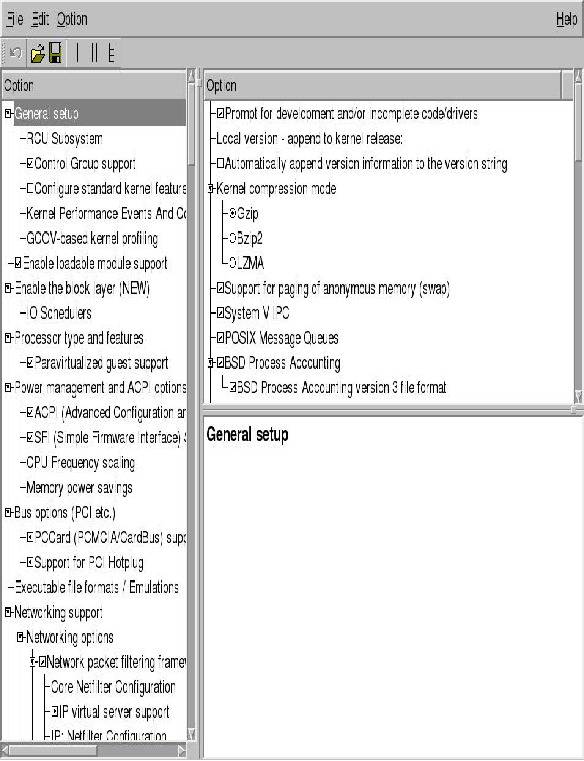
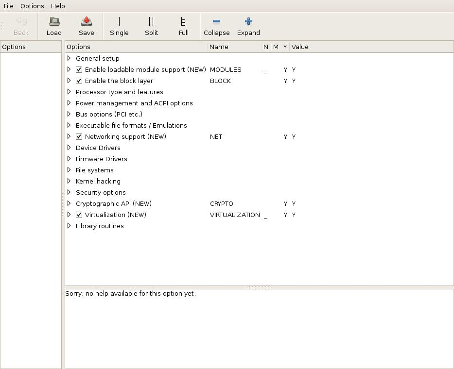

Compiling a Linux kernel (201.2)¶
Candidates should be able to properly configure a kernel to include or
disable specific features of the Linux kernel as necessary. This
objective includes compiling and recompiling the Linux kernel as needed,
updating and noting changes in a new kernel, creating an initrd image
and installing new kernels.
Key Knowledge Areas¶
-
/usr/src/linux/ -
Kernel Makefiles
-
Kernel 2.6.x, 3.x and 4.x make targets
-
Customize the current kernel configuration
-
Build a new kernel and appropriate kernel modules
-
Install a new kernel and any modules
-
Ensure that the boot manager can locate the new kernel and associated files
-
Module configuration files
-
Use DKMS to compile kernel modules
-
Awareness of
dracut
Terms and Utilities¶
-
mkinitrd -
mkinitramfs -
make -
maketargets (all, config, xconfig, menuconfig, gconfig, oldconfig, mrproper, zImage, bzImage, modules, modules_install, rpm-pkg, binrpm-pkg, deb-pkg) -
gzip -
bzip2 -
module tools
-
/usr/src/linux/.config -
/lib/modules/kernel-version/ -
depmod
Getting the kernel sources¶
Kernel sources for almost all kernel versions can be found at The Linux Kernel Archives.
The filenames in the Linux Kernel Archive mimic the version numbering
conventions for the kernel. For example: The filename format for kernel
version 3.0 and 4.0 is linux-kernel-version.tar.xz Thus,
linux-3.18.43.tar.xz is the kernel archive for version "3.18.43".
The used version numbering convention for the 3.0 and 4.0 kernel is
linux-A.B.C.tar.xz where:
-
A denotes the kernel version. It is only changed when major changes in code and concept take place.
-
B denotes the revision.
-
C is the patch number
See the paragraph on Kernel Versioning to learn more about the various conventions that are and have been in use.
A common location to store and unpack kernel sources is /usr/src. You
can use another location as long as you create a symbolic link from your
new source directory to /usr/src/linux
The source code for the kernel is available as a compressed tar archive
in xz (.xz extention) format. Decompress the archive with unxz.
The resulting tar archive can be unpacked with the tar utility, for
example:
1 2 | |
You can also uncompress and untar in one step tar using the Joption:
1 | |
Refer to the man-pages on tar and, xz for more information.
Cleaning the kernel¶
To make sure you start with a clean state you should "clean" the kernel
first. When you compile a kernel into objects, the make utility
keeps track of things and will not recompile any code it thinks has been
correctly compiled before. In some cases, however, this may cause
problems, especially when you change the kernel configuration. It is
therefore customary to "clean" the source directory if you reconfigure
the kernel.
Cleaning can be done on three levels:
make clean
- Deletes most generated files, but leaves enough to build external modules.
make mrproper
- Deletes the current configuration and all generated files.
make distclean
- Removes editor backup files, patch leftover files and the like.
Running make mrproper before configuring and building a
kernel is generally a good idea.
Note
Be warned that make mrproper deletes the main configuration file
too. You may want to make a backup of it first for future reference.
Creating a .config file¶
First you will need to configure the kernel. Configuration information
is stored in the .config file. There are well over 500 options in that
file, for example for filesystem, SCSI and networking support. Most of
the options allow you to choose if you will have them compiled directly
into the kernel or have them compiled as a module. Some selections imply
a group of other selections. For example, when you indicate that you
wish to include SCSI support, additional options become available for
specific SCSI drivers and features.
Some of the kernel support options must be compiled as a module, some can only be compiled as permanent part of the kernel and for some options you will be able to select either possibility.
There are a number of methods to configure the kernel, but regardless
which method you use, the results of your choices are always stored in
the kernel configuration file /usr/src/linux/.config. It is a plain
text file which lists all the options as shell variables.
1 2 3 4 5 6 7 8 9 10 11 12 13 14 15 16 17 18 19 20 21 22 23 24 25 26 | |
To start configuration, change your current working directory to the top of the source tree:
1 | |
As said, there are several ways to create or modify the .config file.
It is strongly discouraged to edit this file manually. Instead you
should use the make command with one of the four appropriate targets
to configure your kernel.
These four targets are:
-
config
-
menuconfig
-
xconfig|gconfig
-
oldconfig
These targets will be explained below in more detail.
make config¶
Running make config is the most rudimentary approach.
It has clear advantages and disadvantages:
-
It does not depend on full-screen display capabilities. You can use it on extremely slow links, or on systems with very limited display capabilities.
-
You will have to work your way through all possible questions concerning kernel options. The system will present them sequentially and without exception. Only when you have answered all questions will you be allowed to save the configuration file. Given that, there are many hundreds of options to go through so this method is tedious. Because you cannot move back and forth through the various questions you are forced to redo everything if you make a mistake.
An example session looks like this:
1 2 3 4 5 6 7 8 9 10 11 12 13 14 15 16 17 18 19 20 21 22 23 24 25 26 27 28 29 30 31 32 33 34 35 | |
make menuconfig¶
The make menuconfig method is more intuitive and can be used as an
alternative to make config. It creates a text-mode windowed
environment based on the ncurses libraries. You can switch back and
forth between options. The sections are laid out in a menu-like
structure which is easy to navigate and you can save and quit whenever
you want. If you prefer a darker color scheme, use make nconfig. The
make menuconfig menu display.
When done, use the arrow keys to select the Exit option at the bottom of the screen. If any changes were made you will be prompted if you would like to save the new configuration. You can also choose to save the configuration using another name and/or location in the filesystem.
Note
If you choose another name or location you need to move the .config
file into the /usr/src/linux directory to compile the kernel.
make xconfig and make gconfig¶
The make xconfig command presents a GUI menu to configure the
kernel. It requires a working X Window System and the QT development
libraries to work. It will provide a menu which can be navigated using a
mouse. Use make gconfig to use Gnome instead of QT. This requires
the GTK+ 2.x development libraries to be available. First, we show you
how the top-level make xconfig window looks:

As said, the command make gconfig does exactly the same, but uses
GTK instead of QT:

make oldconfig¶
make oldconfig can be used to preserve options you choose during an
earlier kernel build.
Make sure the .config file that was the result of the earlier build is
copied into /usr/src/linux/. When you run make oldconfig, the
original .config file will be moved to .config.old and a new
.config will be created. You will be prompted for answers that can not
be found in the previous configuration file, for example when there are
new options for the new kernel.
Note
Be sure to make a backup of .config before upgrading the kernel
source, because the distribution might contain a default .config file,
overwriting your old file.
Note
make xconfig, make
gconfig and make
menuconfig will automatically use the old .config
file (if available) to construct a new one, preserving as much options
as possible while adding new options using their default values.
Compiling the kernel¶
Use the following sequence of make commands to build and install the
kernel and modules:
-
make clean -
make zImage/bzImage -
make modules -
make modules_install
make clean¶
The "clean" argument removes old output files that may exist from previous kernel builds. These include core files, system map files and others.
make zImage/bzImage¶
The zImage and bzImage arguments both effectively build the kernel.
The difference between these two is explained in
Different types of kernel images.
After the compile process the kernel image can be found in the
/usr/src/linux/arch/i386/boot directory (on i386 systems).
make modules¶
The modules argument builds the modules; the device drivers and other
items that were configured as modules.
make modules_install¶
The modules_install argument installs the modules you just compiled
under /lib/modules/kernel-version. The kernel-version directory
will be created if nonexistent.
Installing the new kernel¶
When the new kernel has been compiled the system can be configured to boot it.
First you need to put a copy of the new bzImage in the boot directory
(which should reside on its own boot partition). For clarity the name of
the kernel file should contain the kernel-version number, for example:
vmlinuz-2.6.31:
1 2 | |
This also ensures that you can have more than one kernel version in the
/boot directory, for example if you need to boot an older kernel due
to problems with the new one.
After moving the kernel file to the correct location, you will need to configure the bootmanager (GRUB) so it will be able to boot the new kernel.
For more specific information on GRUB, please refer to grub.
The initial ram disk (initrd)¶
Say your bootdisk has the bootloader, kernel and proper modules on it. Given the advantages of kernel modules you decided to use them. But if you also want to use them for the boot device drivers, you face a problem. GRUB will load the kernel, then execute it. The kernel will try to access the disk to obtain the modules. However, as it has not loaded the proper module yet, it can't access that disk and hangs.
A perfectly good solution would be to build a kernel with the required
disk-driver hardcoded into it. But if you have a larger number of
differing systems to maintain, you either need a personalised
configuration and kernel for each type of system or have to live with a
bloated kernel. To circumvent all of these problems, the kernel
developers came up with a solution: the initrd RAM disk.
A RAM disk is a chunk of memory that the kernel sees as if it were a disk. It can be mounted like any other disk. The kernel supports RAM disks by default. GRUB and LILO can handle RAM disks too. You can instruct them to load the RAM disk from a file and when the kernel boots it has the RAM disk readily available. Such RAM disks are often used to hold scripts and modules to aid the boot process.
By convention the name of the image that holds the initial RAM disk is
initrd. The name is short for "initial ram disk".
The bootloader loads the initrd, it is mounted by the kernel as its
root filesystem. Once mounted as the root filesystem, programs can be
run from it and kernel modules loaded from it. After this step a new
root filesystem can be mounted from a different device. The previous
root (from initrd) is then either moved to the directory /initrd or
it is unmounted.
There are a number of ways to create your own initrd file. A very
convenient method, mainly used by Red Hat (based) distributions is by
using the mkinitrd script. It is a shell script which you might want
to inspect to see how it works. On Debian-based distributions a
utility named mkinitramfs mkinitramfs can be used for the same
purpose. You can also opt to build the file by hand, see the chapter
below.
Manual initrd creation¶
initrd files are compressed archives that contain the files of a
minimal root filesystem. This root filesystem normally contains modules,
scripts and some additional binaries required to allow the kernel to
properly continue its boot.
As said, the mkinitrd script offers a convenient way to build the
initrd file, however not all distributions provide it. If you want (or
must) build one by hand the steps are: create a root filesystem,
populate it with modules and files, create a tar or cpio archive
from it and lastly gzip it.
What type of archive to use depends on the distribution and kernel
version. Older kernels employ tar, newer use cpio. If you are unsure
and have a initrd at hand that came with your distribution, you may
use a command sequence like the one below to check:
1 2 | |
The example above shows the output of a CentOS 5 distribution that uses
cpio as its archiving tool.
To be able to work with the initrd images, the kernel has to be
compiled with support for the RAM disk and configured such that it will
use it. Whatever you put on the initial RAM disk, it should be
compatible with the kernel and architecture you will use. For example,
your boot kernel should be able to recognize the filesystem type used in
the image and the modules you include should match the boot kernel
version.
The next step is to actually create the RAM disk image. First create a filesystem on a block device and then copy the files to that filesystem as needed. Suitable block devices to be used for this purpose are:
-
A RAM disk (fast, allocates physical memory)
-
A loopback device (slightly slower, allocates disk space)
In the rest of this example we will use the RAM disk method, so we will need to make sure a RAM disk device node is present (there may be more than one):
1 2 | |
Note The number of RAM disks that is available by default on a system is an option in the kernel configuration: CONFIG_BLK_DEV_RAM_COUNT.
Next an empty filesystem needs to be created of the appropriate size:
1 | |
Note If space is critical, you may wish to use a filesystem which is more efficient with space, such as the Minix FS. Remember that the boot-kernel will need built-in support for whatever filesystem you choose.
After having created the filesystem, you need to mount it on the appropriate directory:
1 | |
Now the stub for the console device needs to be created. This will be
the device node that will be used when the initrd is active.
1 2 | |
Next, copy all files you think are necessary to the image; modules,
scripts, binaries, it does not matter. One of the most important files to copy over is
/linuxrc. Whenever the kernel is set up to use a initrd image it
will search for a file /linuxrc and execute it. It can be a
script or a compiled binary. Hence, what will happen after mounting your
image file is totally under your control. In this example we will make
/linuxrc a link to /bin/sh. Make sure /linuxrc is given execute
permissions.
1 | |
After you have completed copying the files and have made sure that the
/linuxrc has the correct attributes, you can unmount the RAM disk
image:
1 | |
The RAM disk image can then be copied to a file:
1 | |
Finally, if you have no more use for the RAM disk and you wish to reclaim the memory, deallocate the RAM disk:
1 | |
To test the newly created initrd, add a new section to your GRUB
menufile, which refers to the initrd image you've just created:
1 2 3 4 | |
If you have followed the steps above and have rebooted using this test
entry from the bootloader menu, the system will continue to boot. After
a few seconds you should find yourself at a command prompt, since
/linuxrc refers to /bin/sh, a shell.
Of course, real initrd files will contain a more complex /linuxrc
boot file, that loads modules, mounts the real root filesystem etc.
Patching a Kernel¶
Note This section offers information on a subject that is no longer part of the LPIC-2 objectives. It is maintained because it still contains valid and valuable information.
In older versions of the LPIC-2 objectives candidates were assumed to be able to properly patch the source code of a kernel to add support for new hardware. The objectives included being able to remove kernel patches from patched kernels.
Key files, terms and utilities include:
-
Kernel Makefiles
-
patch -
xz
A patch file contains a list of differences between two versions of a
file. The standard command diff is capable of producing such lists.
The command patch can be used to apply the contents of a patch file to
update the file from the old version to a newer version.
Patching the kernel is very straightforward:
-
Place patch file in the
/usr/srcdirectory. -
Change directory to
/usr/src. -
Uncompress the patch file using
unxz -
Use the
patchutility to apply the patch file to the kernel source:1# patch -p1 <patchfile -
Check for failures.
-
Build the kernel.
If the patch utility is unable to apply a part of a patch, it puts
that part in a reject file. The name of a reject file is the name of the
output file plus a .rej suffix, or a # if the addition of .rej
would generate a filename that is too long. In case even the addition of
a mere # would result in a filename that is too long, the last
character of the filename is replaced with a #.
The common options for the patch utility: patch
-pnumber; --strip=number
- Strip the smallest prefix containing
numberleading slashes from each file name found in the patch file. A sequence of one or more adjacent slashes is counted as a single slash. This controls how file names found in the patch file are treated, in case you keep your files in a different directory than the person who sent out the patch. For example, supposing the file name in the patch file was/u/howard/src/blurfl/blurfl.c, then using-p0gives the entire file name unmodified, while using-p1givesu/howard/src/blurfl/blurfl.c.
-s; --silent; --quiet
- Work silently (suppress output), unless an error occurs.
-E; --remove-empty-files
- Remove output files that are empty after the patches have been applied. Normally this option is unnecessary, since patch can examine the time stamps on the header to determine whether a file should exist after patching. However, if the input is not a context diff or if patch conforms to the POSIX specification, patch does not remove empty patched files unless this option is given. When patch removes a file, it also attempts to remove any empty ancestor directories.
-R; --reverse
-
Assume that this patch was created with the old and new files reversed, so that you are basically applying the patch to the file which already contains the modifications in the patch file. The
patchwill attempt to swap each hunk around before applying it and rejects will come out in the swapped format. The-Roption does not work witheddiff scripts because there is too little information to reconstruct the reverse operation. If the first hunk of apatchfails,patchreverses the hunk to see if it can be applied that way. If it can, you are asked if you want to have the-Roption set. If it can't, the patch continues to be applied normally.Note This method cannot detect a reversed patch if it is a normal diff and if the first command is an append (i.e. it should have been a delete) since appends always succeed. This is due to the fact that a null context matches anywhere. Luckily, most patches add or change lines rather than delete them, so most reversed normal diffs begin with a delete, which fails, triggering the heuristic.
For more information consult the man-pages of the diff command and the
patch command.
Removing a kernel patch from a production kernel¶
A kernel patch can be removed from a production kernel by removing it
from the production kernel source tree and compiling a new kernel. In
the previous topic we've learned that to remove a patch from a file,
you either need to apply it again, or run patch with the -R
parameter:
1 2 3 | |
DKMS¶
DKMS (Dynamic Kernel Module Support) was developed by Dell in 2003. DKMS was created as a solution to combat software problems caused by the dependencies between kernels and kernel modules. As a vendor of computer systems running (amongst others) Linux operating systems, Dell offered software support to customers. When customers would upgrade the Linux kernel, the kernel modules had to be upgraded as well. And whenever Dell released newer versions of kernel modules for hardware support, these modules had to match the Linux kernel in use.
DKMS is a framework, capable of automatically compiling and/or installing kernel modules for every kernel version available on the system. DKMS achieves this functionality by seperating the kernel module files or sources from the actual kernel source tree. This way, both the kernel and kernel modules may be upgraded independent of each other. Major Linux distributions offer the DKMS framework through their package system. When the kernel is upgraded by the package manager software on a system running DKMS, a hook will take care of deciding whether any kernel modules need to be compiled and/or installed for the new kernel. The other way around, new kernel modules can be compiled and/or installed by DKMS without requirements towards the kernel version.
DKMS does have a few requirements in order to function properly. The software dependencies are dependant on the Linux distribution in use. But one requirement that is uniform across all distributions is the necessity for kernel header files. The headers for the running kernel version can be installed using the following package manager commands:
On Red Hat based Linux distributions:
1 | |
On Debian-based Linux distributions:
1 | |
Due to the adoption of DKMS amongst major Linux distributions, many
kernel modules available through package managers are (also) available
as DKMS-modules. On Debian-based Linux systems, these DKMS kernel
modules can be identified by their naming convention. The package names
for these files end in -dkms. For example: oss4-dkms. After
installation of these packages, the kernel module source files are
placed within a corresponding /usr/src/module-version directory
together with a dkms.conf configuration file. Whenever a kernel or
kernel module change triggers the DKMS system, the directory specified
by the source_tree variable from /etc/dkms/framework.conf will be
checked for the existence of subdirectories containing dkms.conf
files. The contents of these dkms.conf files then determine what
happens next. The following example comes from a Debian-based Linux
system and should clarify this explanation:
1 2 3 4 5 6 7 8 9 10 11 12 13 14 | |
BUILT_MODULE_NAME determines the name of the compiled module. This
directive is mandatory if the DKMS-module package contains more than one
module. DEST_MODULE_LOCATION determines the location for the compiled
module. The value for this directive should always start with "/kernel"
which in turn redirects to /lib/modules/kernelversion/kernel. This
value is mandatory except for the following Linux distributions which
use a distribution specific directory: Fedora Core 6 and higher, RHEL 5
and higher, Novell SuSE Linux ES 10 and higher and Ubuntu.
PACKAGE_NAME determines the name associated with the entire package of
modules. This directive is mandatory. PACKAGE_VERSION determines the
version associated with the entire package of modules and is mandatory.
AUTOINSTALL is a boolean value that determines whether or not the
dkms_autoinstaller service will try to install this module for every
kernel the system boots in to. REMAKE_INITRD determines whether the
initrd image should be generated again after this module is installed.
The value of this directive defaults to "no". When configuring a value,
know that all characters after the first character are discared. The
first character is only interpreted if it is a "y" or "Y". MAKE is one
of many directives that stores its value in to an array. The MAKE
value determines the build options. When not defined, DKMS will try to
build the module using a generic MAKE command.
On Debian-based Linux distributions, the directory
/usr/share/doc/dkms/examples holds example configuration files. On Red
Hat based Linux systems, example files can be found within the
/usr/share/doc/dkms directory.
After a module is built by DKMS, it is part of an extensible framework.
DKMS provides several commands to issue on the module. Covering all
these commands reaches beyond the scope of this book. But apart from
man dkms the dkms command should be familiar. The dkms command
makes it possible to add or remove modules to or from the source
tree. Once part of the source tree, modules may be build. After
building, a module may be installed onto the kernel it was build for
using the install option. uninstall reverts this process. The
status option prints information about added modules to standard
output.
The example above uses a module from the package manager. DKMS is also
capable of accepting archive formats containing binary modules, module
sources or both. When adding modules to DKMS this way it is important
that the archive also contains a valid dkms.conf file. Using the
dkms mktarball command, such an archive can be created based on
modules extracted from the current system. This tarball archive can then
be imported to the source tree using the dkms ldtarball command.
Dracut¶
Just like DKMS may be configured to behave as an event-driven tool,
dracut can behave in a similar way. Instead of compiling kernel
modules, dracut can take care of generating a new initramfs image
whenever there seems a need to do so.